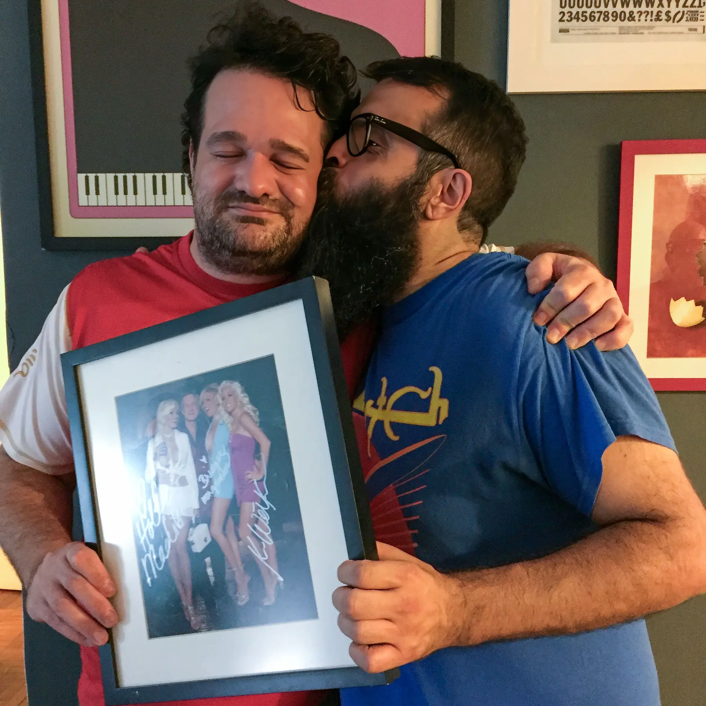
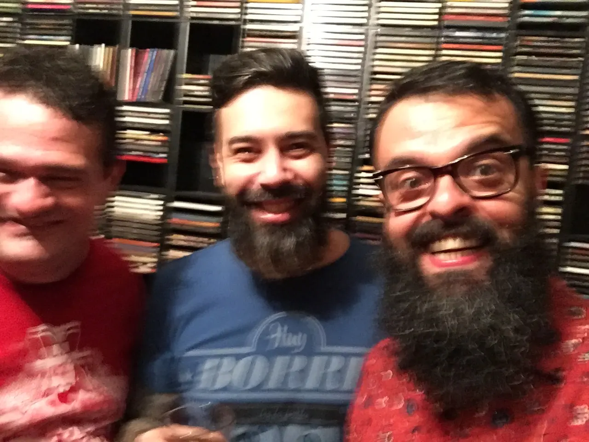

Um amigo de contrastes

Jardel e eu na minha casa, Abril de 2016
A redação da Playboy foi, de longe, o melhor lugar em que trabalhei na vida. As madrugadas adentro em fechamento eram compensadas com folga por estar rodeado de gente talentosa, inteligente e engraçada. O whisky importado que rolava nessas ocasiões também ajudava. Whisky esse, sempre patrocinado pelo Jardel.
A minha mesa era quase de frente para a dele mas era raríssimo conseguir vê-lo por detrás das montanhas de livros, CDs e revistas que tomavam conta de seu cubículo.
Sempre que chovia muito em São Paulo, o trânsito virava um caos ainda maior do que o normal e, todas as vezes em que isso acontecia, pintava uma matéria no noticiário no estilo "E a volta do paulistano pra casa foi complicada", a gente ria e apontava a mesma matéria escrita pela milésima vez.
Jardel observava esse fenômeno com muita atenção. Tem um tuíte muito bom dele nesse tema: "Só que ama o Estadão entende: eles fazem um caderno especial sobre o aniversário de São Paulo e o primeiro título é LOCOMOTIVA DO BRASIL."
Outro clichê bastante popular era o "Terra de contrastes". Sempre encontrávamos algo que variava entre um tema bastante amplo, como "Brasil, terra de contrastes" ou algo mais local tipo "Serra da Bocaina, terra de contrastes". Uma vez, no caderno de bares e restaurantes da Playboy, colocamos a legenda "Um prato de contrastes" em alguma iguaria que misturava doce com salgado.
Jardel que me perdoe o clichê, mas "Jardel, Um Homem de Contrastes" seria um título adequado para ele. Digo isso porque, dentre todas as coisas que lhe eram caras, havia uma que sempre me intrigou: astrologia.
Ele levava os signos zodiacais muito mais a sério do que me parecia razoável. Mas não estou reclamando, nem falando mal do Jards. Conhecendo-o como conheci, acho que foi essa coincidência astral que selou nossa amizade lá em 2002. Assim como ele, eu sou de câncer. Nasci em 25 de junho e ele, em 19 de julho.
Éramos muito parecidos em muita coisa mesmo. A gente gostava das mesmas bandas — Suede, Placebo, Slayer e Danzig. Um gosto musical de contrastes. Gostávamos também dos mesmos bares, drinks e livros. Chegamos a morar na mesma avenida, ainda que em épocas diferentes. Avenida Rouxinol, em Moema, bairro favorito do Jards. Bem, nessa parte a gente discordava. Só ele mesmo achava Moema legal.
A primeira vez que conversamos foi na porta da Torre do Dr. Zero, uma balada que ficava na Mourato Coelho. Naquela época ainda era permitido fumar dentro de bares, mas mesmo assim saí com ele pra fumar na rua. Eu não fumo, nunca fumei, mas me vi nessa mesma situação dezenas de vezes nos 20 anos seguintes. A conversa com o Jardel era sempre tão bacana que valia a pena o transtorno de sair pra rua só pra não deixar o assunto morrer.
Em 2005, fui trabalhar na Editora Abril. Logo depois, ele também virou abriliano e foi muito legal ter esse contato diariamente. Em 2008, ficamos ainda mais próximos: entrei na Playboy e passamos de amigos para colegas. Como já estabelecemos, a Playboy foi o melhor lugar em que trabalhei e o Jardel foi grande parte disso.
Jardel era engraçado, peculiar. Tinha obsessão por coisas e eu diria que era levemente acumulador. Em sua casa, era fácil encontrar todos os volumes da Enciclopédia Barsa completa que o acompanhava desde os anos 80. E não é que estavam entulhados na despensa pegando pó — estavam todos exibindo suas lombadas carcomidas e letras douradas que já viram dias melhores.
Também estava ali o CD de estreia da Tiazinha e os Cavaleiros Mascarados. Há um verso na música "Merda de Bar", da banda Comunidade Nin-Jitsu: "A minha calça de roqueiro é apertada / Na carteira porcarias que não servem para nada." O quarto do Jardel era cheio de porcarias que não servem para nada. Inclusive esse CD da Comunidade Nin-Jitsu.

Jardel, Marco Bezzi e eu. As paredes desse quarto eram forradas por esses porta-CDs.
A verdade é que considero o Jardel um dos melhores amigos que já tive, mas existe todo um lado da vida dele que nunca conheci. Jardel cresceu no Rio de Janeiro morando com a mãe. Formou-se em Goiás e tem família por parte do pai por lá, mas, assim como sua vida no Rio, pouco sei a respeito dessa parte da vida dele. Uma vez, conheci a irmã dele em uma festa.
Eu sei que isso é absolutamente normal — muitos dos meus amigos não sabem esse tipo de detalhe sobre a minha vida também. Mas me lembro de como foi estranho ler que ele era torcedor do Vila Nova de Goiás. "Um torcedor apaixonado do Tigrão", postou o clube em suas redes. Ou ainda que era conhecido como Jardelzinho pelos amigos e familiares. Eu sempre achei que o Jardel era Flamengo.
Ainda no terreno de contrastes, ele adorava editar o caderno de moda da Playboy. Camiseta de banda era seu uniforme, sempre com uma combinação meio esquisita como sapato social. Mesmo assim, sempre que tinha oportunidade, ele fechava esse caderno — para infiltrar algum cavalo de Tróia. Como na vez em que fizemos um especial sobre tênis e o título foi "Inveja do Tênis". Ou quando a editora de moda entregou um texto com o título "O branco voltou" e ele não se conformava: "Onde é que o branco estava? Quem parou de usar roupa branca?"
Jardel tinha suas birras com pessoas completamente aleatórias. Meu favorito era o Albertinho da publicidade — o cara que chegava uma vez por mês na redação pra garantir que havia espaço suficiente para os anunciantes. Só isso. Jardel odiava o Albertinho. Eventualmente, quando havia mais anúncios do que o previsto, precisava reeditar ou derrubar alguma matéria e esse trabalho geralmente caía nas mãos do Jardel, que naquela época estava na base da cadeia alimentar dos editores da revista. Talvez essa seja a origem do ódio irracional pelo pobre coitado, que era apenas o mensageiro.
Em 2017, me mudei para Medellín, na Colômbia. Voltei algumas vezes para visitar amigos e família em São Paulo. Na última vez que estive por lá, Jardel foi a última pessoa que vi. Ele fez questão de me levar uma sacola cheia de porcarias que não servem para nada na casa do meu irmão, onde eu estava hospedado, e me dar um último abraço antes da minha volta.
Em 2018, recebi uma mensagem no Facebook do porteiro do prédio dele, algo que me pareceu muito esquisito. O rapaz se identificou e me perguntou se eu sabia do Jardel — de acordo com ele, o Jards não aparecia em casa há 4 ou 5 dias. Achei que era golpe.
Acontece que ele tinha uma rotina de cumprimentar o porteiro todos os dias e, quando se ausentava por muito tempo, sempre deixava a chave pra que ele alimentasse seus gatos, Sid e Nancy. Mas dessa vez, nada. O rapaz tocou a campainha, ouviu os gatos miando. Preocupado, foi buscar no Facebook amigos em comum — e acabei sendo um dos que ele contatou.
De alguma forma, alguém conseguiu contatar a família e descobriram que ele havia sido internado por causa de um abscesso. Parece grave, pensei, mas ao mesmo tempo, nada tão grave assim. Até onde eu sei, essa foi a primeira manifestação do câncer. Ou pelo menos, a primeira vez em que se percebeu isso.
Minha filha, Laura, havia nascido poucas semanas antes desse episódio. O Jards sempre foi muito interessado nela — perguntava a respeito e mandava, como sempre, porcarias que não servem para nada de presente. Mas, justiça seja feita, ele deu a ela uma tiara que ela ama e usa até hoje. Mandou também pôster do Black Sabbath pra ela.
Em 2019, me mudei para Helsinque, Finlândia, e mesmo à distância continuamos nos falando com frequência. Em mais de uma ocasião, fui a um show por aqui e liguei pra ele assim que cheguei em casa pra contar como havia sido. Foi assim no show do Suede e no show do Placebo. Aliás, por uma dessas coincidências, o Suede está tocando de novo aqui em Helsinque enquanto escrevo esse texto. Mas vou passar dessa vez.
Foi nessa época que as coisas começaram a ficar mais complicadas. Ele falava pouco sobre a doença comigo, e eu sempre entendi que, quando conversávamos, o assunto deveria ser mais leve pra não pesar ainda mais as coisas.
Em dezembro de 2021 fui a São Paulo mas, no dia em que cheguei, ele me mandou uma mensagem dizendo que havia contraído COVID e que não poderia receber visitas. Felizmente conseguimos nos ver de novo. Fui até a casa dele com Marco Bezzi na noite anterior à minha volta à Finlândia e nos vimos pessoalmente pela última vez, em janeiro de 2022.
Foi uma clássica noite na casa do Jardel: música alta com a televisão ligada ao mesmo tempo, um monte de coisa em cima da mesa e bebidas maravilhosas. Ele tinha muito orgulho de seu bar e fazia questão de só ter bebida boa em casa. A única vez que tomei um Johnnie Walker Blue Label foi por intermédio do Jards.
Eu estava no ponto de ônibus quando a Adriana me ligou pra me contar que ele havia morrido. Eu não chorei na hora nem depois. Eu havia chorado poucos dias antes, quando ele me mandou um áudio no WhatsApp. A voz estava muito cansada e fraca. Ali foi quando eu entendi que havia pouco tempo mesmo.
Pouco depois de sua morte, tive a ideia de guardar todos os seus tuítes. Em parte porque ele era muito engraçado — mas também porque o Twitter mostrava o talento dele de uma forma bem particular: Jardel era muito bom escrevendo perfis e matérias de fôlego, mas era capaz de manter a mesma essência em apenas 140 caracteres (depois, em 2017, o limite passou pra 280). Minha motivação era simples: não queria que a voz de um dos meus melhores amigos se perdesse.
Enquanto escrevo esse texto, em março de 2026, a conta do Jardel no Twitter (agora X) segue ativa. Mas vai saber por quanto tempo? E, mesmo que continue ativa para sempre, o Twitter foi concebido para o que está acontecendo agora, não exatamente para ser um bom arquivo.
Neste site eu quis transformar esse material em algo buscável e navegável por temas e palavras-chave. Plataformas mudam. Algoritmos mudam. Serviços acabam. Memória digital é mais frágil do que parece. Fiz tudo isso com o máximo respeito possível — minha ideia nunca foi substituir a experiência original do Twitter; é apenas uma tentativa de preservar o que importava.
O Jardel morreu, mas que privilégio foi ter essa amizade por 20 e poucos anos. Eu espero que você encontre aqui nesses 15.587 tuítes algo que faça sentido pra você. E se você nunca ouviu falar do Jardel antes, aproveite pra buscar a opinião dele sobre qualquer assunto que te interesse. É bem provável que ele tenha uma para oferecer.
Uma das piadas que tenho com a Adriana é que você sabe quando qualquer coisa é uma merda quando foi feita com "carinho". Mas vou dizer assim mesmo: fiz esse site com muito carinho. Tudo bem, eu sou canceriano.